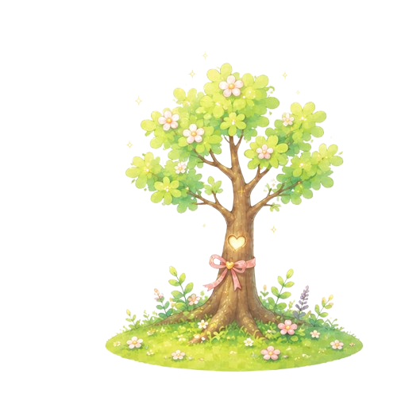
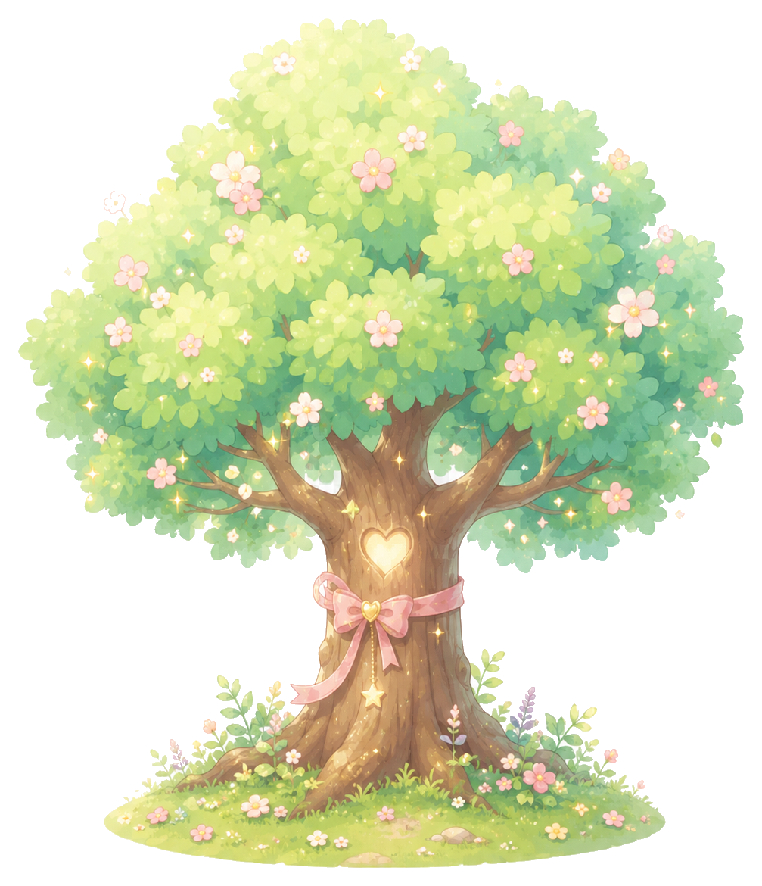

01
하루 한 번 마음 기록
오늘의 기분을 고르고, 기억하고 싶은 한마디를 남겨요. 자세한 이야기는 쓰고 싶은 날에만 덧붙일 수 있어요.
A SMALL FOREST FOR YOUR DAY
오늘의숲은 하루에 한 번 마음을 기록하며, 30일 동안 한 그루의 나무를 천천히 키우는 작은 기록 공간이에요.
길게 쓰지 않아도 괜찮아요. 오늘을 기억할 한마디면 충분해요.

ABOUT TODAYFOREST
오늘의숲은 잘 쓴 일기를 요구하지 않아요. 지금의 기분과 짧은 한 줄을 남기면 그 하루가 나무의 성장으로 이어집니다.
01
오늘의 기분을 고르고, 기억하고 싶은 한마디를 남겨요. 자세한 이야기는 쓰고 싶은 날에만 덧붙일 수 있어요.

02
마음을 기록할 때마다 나무가 조금씩 자라요. 서두르지 않고 하루하루 쌓인 시간이 한 그루의 나무가 됩니다.
03
완성된 나무에는 지나온 마음이 열매로 맺혀요. 열매를 눌러 그날의 기록을 다시 돌아볼 수 있습니다.

04
친구와 각자의 하루를 남기며 둘만의 나무를 키워요. 완성된 나무는 함께한 숲에 한 시절의 기억으로 남습니다.
HOW IT GROWS
포근한 날도, 지친 날도 있는 그대로 남겨요.
짧은 기록 하나가 오늘 나무의 양분이 됩니다.
나무가 자라고, 작은 장식과 숲친구가 찾아옵니다.
마음 열매와 함께 지나온 날들을 다시 만나요.
A QUIET PROMISE
오늘의숲은 마음 기록을 보여주기 위한 공간이 아니라, 나를 위해 남기는 정원이에요. 친구와 연결되어도 비공개 기록은 다른 사람에게 보이지 않습니다.
FREQUENTLY ASKED
기록은 기본적으로 내 정원에 보관됩니다. 친구에게 보여주고 싶은 마음 열매만 공개로 바꿀 수 있고, 비공개 기록은 친구에게 표시되지 않아요.
나무의 성장은 하루 한 번의 마음 기록으로 이어집니다. 오늘 기록을 마쳤다면 내일 다시 새로운 마음을 남길 수 있어요.
물론이에요. 개인 나무와 마음 기록은 혼자서도 모두 이용할 수 있습니다. 친구, 편지, 공유나무는 원할 때만 선택해서 이용해요.
완성된 뒤에도 마음 기록은 계속 남길 수 있어요. 완성된 나무와 마음 열매를 보며 지나온 시간을 돌아볼 수 있습니다.
공유나무는 두 사람의 참여가 성장으로 이어지는 공간이지만, 각자의 개인 기록 내용이 자동으로 공개되지는 않아요.
YOUR FOREST IS WAITING
카카오로 로그인하면 이전에 키우던 정원이 있는 경우 그대로 이어집니다.